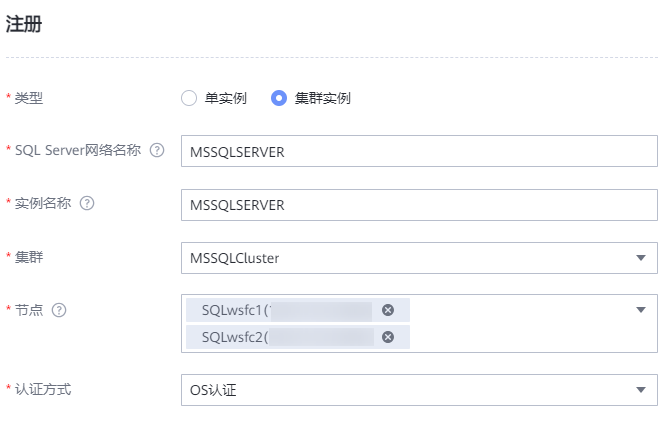
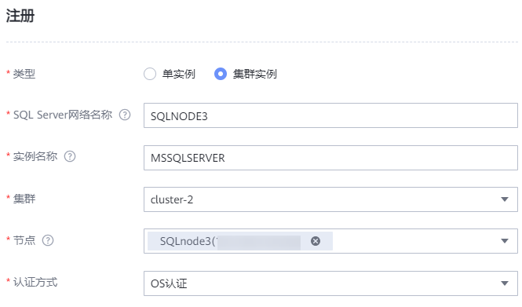

当SQL Server数据库所在主机安装ProtectAgent后，本产品会自动发现SQL Server数据库主机，您需要在管理界面注册数据库，以对其进行保护。
背景信息
要备份或恢复数据库，本产品需要添加数据库的登录凭据。支持两种认证方式：Windows身份验证、SQL Server身份认证。
- 当数据库已开启Windows身份验证，则本产品自动注册SQL Server数据库，管理界面上自动显示数据库的认证状态为“已认证”。
- 当管理界面显示为“未认证”时，表示新注册的数据库认证方式为“数据库认证”，需要您输入认证信息进行认证。
注册SQL Server单实例
- 选择“保护 > 数据库 > SQL Server”。
- 选择“实例”页签。
- 单击“注册”，注册SQL Server。
- “类型”选择“单实例”。
- 配置数据库实例及其认证信息。
相关参数说明如表1所示。
- 单击“确定”。
注册SQL Server集群实例
前提条件
注册SQL Server集群实例前，请确保集群中每个数据库主机已进行注册。

要求集群中所有主机已注册的数据库名称相同。
操作步骤
- 创建集群。
- 在SQL Server页面选择“集群”页签。
- 单击“注册”。
- 在“注册”页面，自定义集群名称，并选择集群节点。
- 单击“确定”。
- 注册集群实例。
- 在SQL Server页面选择“实例”页签。
- 单击“注册”。
- “类型”选择“集群实例”。
- 配置数据库实例及其认证信息。
相关参数说明如表2所示。
- 单击“确定”。
相关操作
- 若集群类型为WSFC集群时，选择节点时需要选择所有节点。

- 若集群类型为可用性组时，需要逐个注册集群实例。
